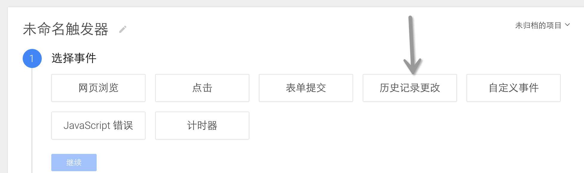
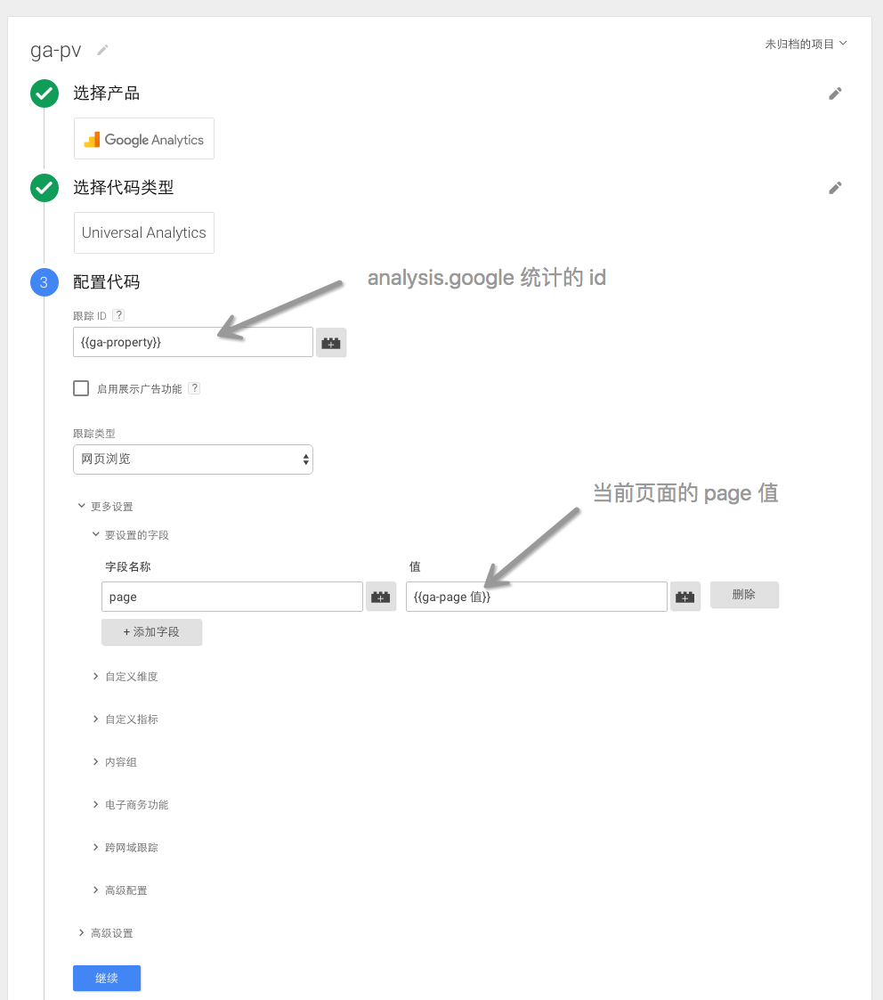
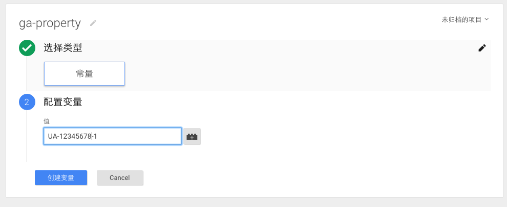
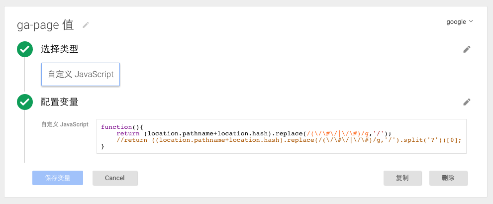
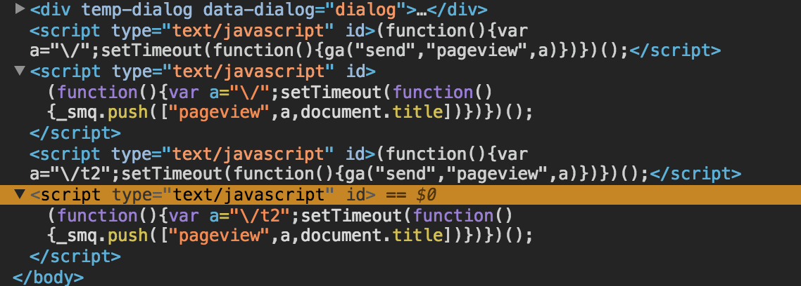

google.tagmanager 在单页面中的实践
在上一篇文章中说了下基础的 tagmanager 怎么使用 入口在这里
下面是我遇到的一些问题，以及处理方法，可能有些有问题，或者处理的很复杂，如果你有更好的思路，请一定联系我 hellozhengjia@gmail.com 感谢。
一、单应用页面怎么处理 PV（pageview）？
现在有很多优秀的框架能实现页面应用化，一次加载所有资源，根据路由变化，加载不同页面，而不进行刷新，例如 AngularJS ,由于这类网站在页面跳转时，并不进行页面刷新，所以 GA（analytics.google）不会发送 PV 数据， 这时该怎么办呢，其实官方文档中给出了建议，链接点这儿，文档的大意是，你的网站，你当然知道什么时候需要发 PV 了，so，需要的时候就发给我吧
第一步，设置 page，ga('set', 'page', '/new-page');
第二步，发送 pv，ga('send', 'pageview');
搞定，超简单。
1、但是这里有一个问题，设置 page？什么是 page？
举个例子，例如你使用的是 angular，你的链接就会像这样：harvestmoon.cn/blog/#/abc、 harvestmoon.cn/blog/#/xyz，她们的 page 为别为 abc、xyz；在我自己的实践中，我是将 page 设置为 blog/abc 和 blog/xyz 的，统计的数据也是正确的，可能是伟大的谷歌为我们做好了兼容。
2、这里还有一个问题，在逻辑代码中，我知道什么时候执行 设置 page、发送 pv,但是在 tagmanager 中怎么设置触发器呢？
这位观众，你很厉害哦，一下抓住了重点，接下来，我们就讲讲在单应用页面中怎么使用 tagmanager。
二、单应用页面中使用 tagmanager
问题的关键就是：在我们本地的代码中，我们总是知道何时发生了路由切换，从而知道什么时候发送 pv，以 angular 为例，如下代码
1 | $rootScope.$on('$routeChangeSuccess', function (event, current, previous) { |
所以我们只需要在 tagmanager 中找到这样一个触发时机即可，在新建触发器（triggers）时，伟大的谷歌再次让我膜拜，我发现一个内置的触发器叫做【历史记录更改】，它的意思是只要是网址发送了变化，就会触发，简直就是为单应用定制的触发器。

知道什么时候触发，接下来，只需要搞定执行代码即可，然而代码早已经有了 ga('set', 'page', '/new-page'); ga('send','pageview');
三、是时候看看具体的操作了
1、我们从代码（tags）开始，选择新建代码，依次：
选择产品-》Google Analysis；
选择代码类型-》Universal Analytsis；
配置代码-》跟踪ID 填入你的 Analysis.Google 的 ID，在管理下的媒体资源设置下可以找到，我这里填入的是 ga-property 是引用了自己设置的一个变量（变量在下面介绍）。
-》跟踪类型：网页浏览（就是平时所说的 pv）
-》字段名称填入 page，值填入本页面的 page 值（这里我有使用了一个自定义的变量 ga-page 值，后边讲解怎么设置）
触发条件-》新建一个触发器，历史记录更改；如图，还有一个【窗口已经加载】触发器，是因为页面第一次加载时，我们需要发送 pv，【历史记录更改】在第一次加载时，是不会触发的。

2、变量的创建，
1）ga-property 变量，在左边栏选择变量（variables），选择新建
选择类型-》常理
配置变量-》填入你的跟踪 ID 即可

2）ga-page 值
主要说下自定义的 JavaScript，你需要创建一个匿名函数，返回你需要的值即可
拿 http://www.smartisan.com/t2/#/overview 这个网址做例，我这里返回的就是 t2/overview，你可以根据自己的需要返回任何值

四、 可能的问题
tagmanager 解决单页面 pv 的问题大致就如上，下面记录一些已知问题
1、发送的 pv 标题错误：由于触发条件为【历史记录更改】，会导致单页面标题还未改变，就已经发送了 pv，所以往往本次 pv 的标题还是上个页面的。
目前我想到的解决方法比较傻，就是每次发送 pv 的代码（tags）都选择【自定义 javascript】，在代码了 setTimeout 延迟大概 200ms 然后发送 pv，这时候标题已经切换为新的了。但是这样有个问题，【自定义 javascript】每次触发都会忘页面的 body 后边加入一个想 标签，目前看来虽然没有什么大的伤害，但总是不够优雅。
